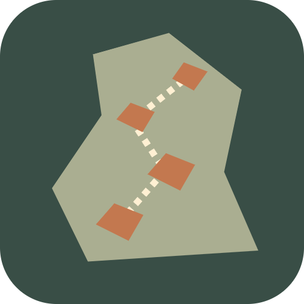

<- all projects

Chalk & Chance
PC
Volume
Live
A cozy climbing puzzle: plan every hold, rest on the wall and win back your old crew.
You come home to a mountain town to reopen your mentor's climbing gym. Learn the local routes, rebuild trust with a crew that split up years ago and get ready for the unfinished ascent. Every climb is a calm movement puzzle: pick a hand or foot, then a hold it can reach, keep your hands above your feet and find level footholds to rest. Nothing is timed. Climb 40 hand-made routes on four crags in three kinds of weather, with five climbing partners, 20 campfire conversations, six story chapters and three endings.